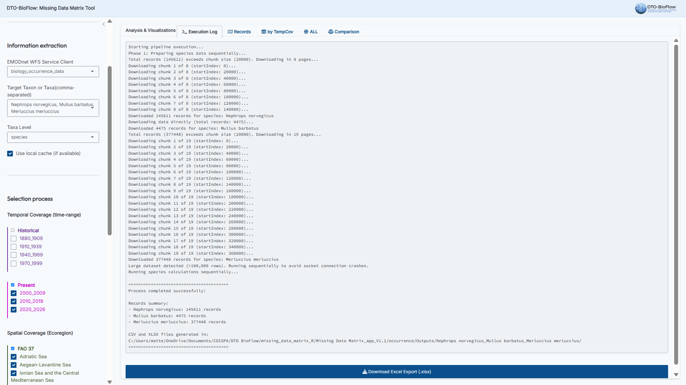
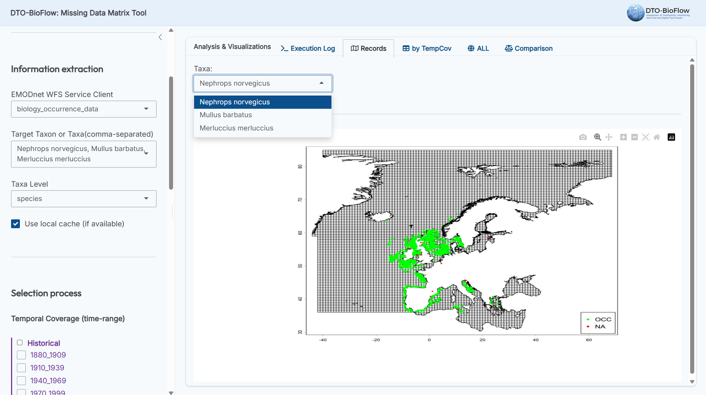
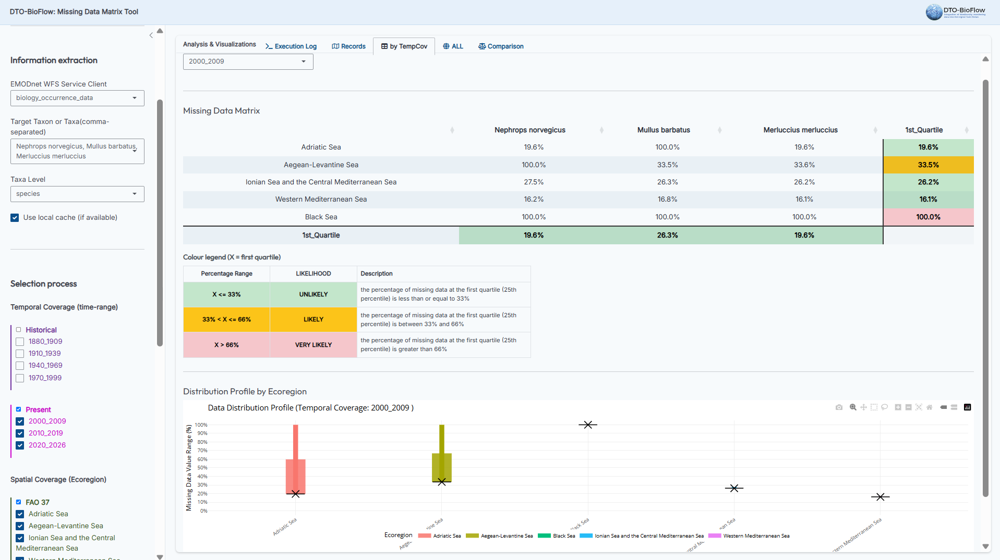
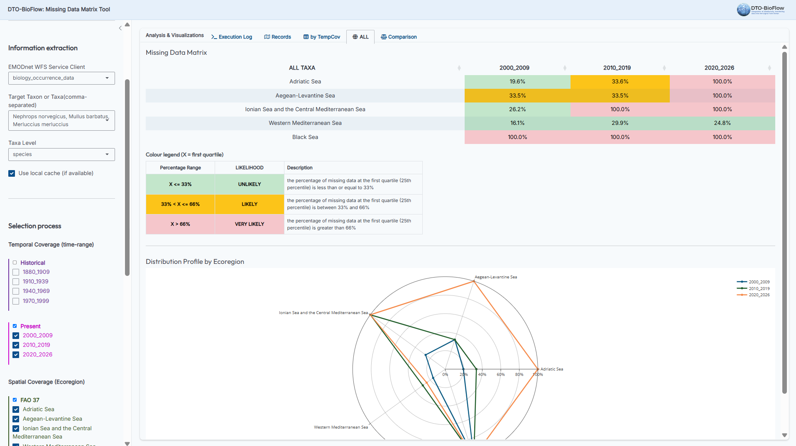
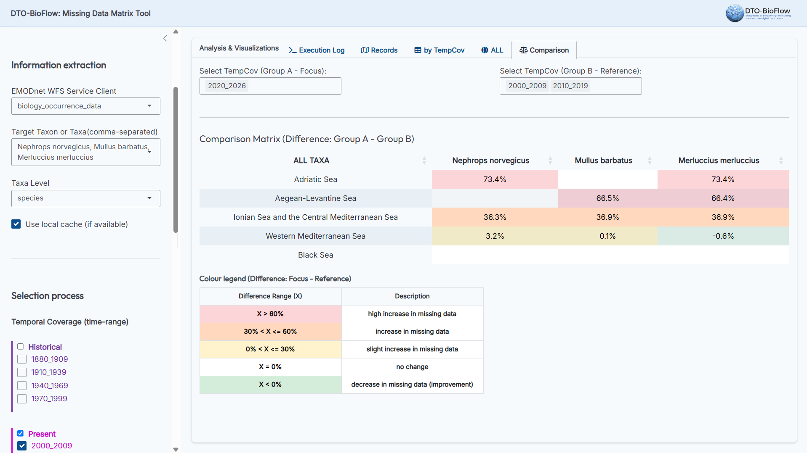

Description
Missing Data Matrix is a flexible and adaptable tool developed under the
framework of the project DTO-BioFlow to easy the
assessment of missing data on the ability to develop digital solutions in a functional DTO environment.
Biodiversity data currently included in EMODnet Biology lot, and hence into the EDITO infrastructure
serving the EU DTO, are assessed through a multistage methodology.
The application is structured with a shiny dashboard (app.R) which connects to the core analytical scoring tool in Missing data_matrix.R and helper of spatial/calculation logic in function.R. Biodiversity data are queried and downloaded from EMODnet directly into the R environment via the EMODnet Web Feature Service (WFS) package.
Objectives & Target Outcomes
The primary objective of the Missing Data Matrix is to provide information for
biodiversity data mobilization efforts. By doing so, the tool provides key outcomes to perform a risk-based
assessment on the applicability and suitability of potential digital solutions envisaged in the European
Digital Twin Ocean (DTO).
Methodology & Assessment Flow
Missing data is defined as data that are lacking or absent because the data does not exist or
is unavailable or inaccessible. The current version of the Missing Data Matrix is able to work on
occurrence and abundance of missing data at different taxonomic levels.
The tool employs a multi-stage methodology outlined in the deliverable 2.8. The workflow consists of four main procedural pillars (visualized in Figure 1 below):
Figure 1: Interactive flow chart schematising the assessment procedures of the missing data. Click on each procedural pillar to display detailed information.
1. Information Extraction

Figure 2: Chart showing the different levels for each classification factor together with their hierarchical position.
Installation
Packages
To run this application, make sure the following packages are installed from CRAN:
install.packages(c("shiny", "bslib", "emodnet.wfs", "tidyverse", "sf", "terra", "openxlsx2", "DT", "plotly", "lubridate", "base64enc"))Note: Make sure that app.R, Missing data_matrix.R, function.R, and macrogroups.csv are stored in the correct project structure.
Running the shiny app
Launch the app by running the following command in R:
shiny::runApp(".")Configuration
The shiny app provides an interactive Configuration Panel sidebar divided into three main sections:
1. Working Directory
- Absolute local path: Specify the absolute directory path where your code and data files
reside.
# Example path (Windows) C:/Users/Username/Documents/COISPA/DTO_BioFlow/missing_data_matrix_R
2. Information extraction
- EMODnet WFS Service Client: Choose either
biology_occurrence_data(default) orbiology_abundance_dataas gridded DIVA(Data Interpolating Variational Analysis)-based data products. - Target Taxon or Taxa(comma-separated): Here you have to define the taxon/taxa domain to
be analyzed using the classical Linnean taxonomic system and hierarchy (species, genus, family, order, class, phylum); it can
be entered either as a scientific name of the species (e.g., Nephrops norvegicus) or as higest
taxonomic levels (e.g., Nephrops, Nephropidae, Decapoda, Malacostraca,
Arthropoda). Only the taxa with an accepted name (intended as valid aphiaID) can be queried and
downloaded; please find more information on how to verify that a scientific name is assigned to a single and
persistent aphiaID here.
Hence the user can:- type a custom taxon or list of comma-separated taxa (e.g.,
Acidobacteria, Ctenophora) and press Enter to add.
Note: all scientific names in the custom list must belong to the same taxonomic level (in the example provided above is phylum). - select a prebuilt macrogroup loaded dynamically from macrogroups.csv. In such a specific case taxa belonging to
different taxonomic levels can be downloaded and analyzed simultaneously. Some default macrogroups have been
already defined (e.g.
Phytoplankton,Zooplankton, etc..), however the user is free to modify them or create new ones by locally editing the macrogroups.csv.
- type a custom taxon or list of comma-separated taxa (e.g.,
- Taxa Level:
- If a prebuilt macrogroup is selected, this box is automatically disabled and reads
(Defined in Macrogroup). The engine dynamically assigns mixed taxonomic levels for each taxon according to the definitions in macrogroups.csv. - If custom taxa are typed, choose the taxonomic level they belong to (e.g.,
genusif Nephrops is entered as taxon to be analysed); it will automatically affect the selection of taxonomic resolution (see below).
- If a prebuilt macrogroup is selected, this box is automatically disabled and reads
Semicolon Hierarchical CSV Definitions
Prebuilt macrogroups are loaded dynamically from macrogroups.csv using
a semicolon-separated hierarchical structure (Macrogroup;phylum;class;order;family;genus;species).
The target taxon in each row is resolved as the rightmost non-empty column (lowest rank) and query levels are
parsed dynamically.
3. Selection process
This section acts as a filter to visualize different outcomes of the missing data assessment, giving the user flexibility to investigate missing data percentages across different spatio-temporal coverages and resolutions:
- Temporal Coverage (time-range): Select which time-range to include, split into Historical (1880 to 1999) and Present (2000 to 2026) aggregations.
- Spatial Coverage (Ecoregion): Select the target Mediterranean ecoregions, grouped under FAO 37 (Adriatic Sea, Aegean-Levantine Sea, Ionian Sea, Western Mediterranean, Black Sea) and/or FAO 27 (Atlantic/Baltic ecoregions).
- Taxonomic Resolution: Choose the minimum taxonomic rank limit (
species,genus,family,order_class) to be investigated. The field is automatically pre-filtered according to the selected Taxa Level. - Temporal Resolution: Choose the minimum temporal resolution limit (
day_week,month_season,annual) to be investigated. - Spatial Resolution: Choose the minimum spatial resolution limit
(
geographical coordinates,shape/grid) to be investigated.
Note: the selection of minimum resolutions will affect the size of the data subsets to be investigated and thus the percentage of missing data reported.
Output Folders
The outputs are stored in 3 sub-folders under the occurrence or abundance
directories:
- records: contains map plots (
records_[Taxon].png) displaying the geographical positions of the occurrences (green for inside the spatial domain, red for outside). Note: not available when analyzing abundance data. - Outputs: contains the computed missing data matrix results by time range. Output
subfolders are named after the active macrogroup or by collapsing the individual taxa names. Files are saved in both
.csvand formatted.xlsxsheets (with color-coded cell styles). - Rdata: caches binary files (
[Taxon].RData) containing occurrence data frames to avoid re-downloading from the WFS server on subsequent runs. The option "Use local cache (if available)" is present in the configuration panel to enable or disable this feature.
Engine Optimization & Memory Safety
To support very large datasets without exhausting local memory or freezing the system:
- WFS Paging: large queries are automatically split into manageable chunks (20,000 records per page) to prevent server timeouts and allow frequent yielding to the event loop for connection monitoring and cancellation checks.
- Sequential Fallback Check: computations run in parallel on multiple cores for small datasets, but automatically fall back to sequential execution for large datasets (>100,000 rows) to prevent socket serialization/write crashes on Windows.
- Distinct Coordinates Plotting: ecoregion occurrence maps
(
records_[Taxa].png) are generated by plotting only unique coordinate pairs, saving gigabytes of graphics memory.
Note: the averaged time to download and analyze 100000 records is about 1 minute.
Analysis & Visualizations
After hitting Run Pipeline Execution, the results can be explored across five tabs:
1. Execution Log
Displays console progress alerts (including the exact number of records downloaded or loaded from cache for each taxon) and a direct Excel download button.

2. Records
Provides a zoomable interactive map of download locations (not available for gridded abundance data).

3. by TempCov
Visualizes the missing data matrix for each temporal window, styled by likelihood of missing data (Unlikely ≤ 33%, Likely 33-66%, Very Likely > 66%), alongside a boxplot distribution chart.

4. ALL
Aggregates the 1st quartile summaries across all selected temporal ranges, mapped on a radar plot.

5. Comparison
Provides side-by-side comparative scoring matrices displaying net changes between selected target (focus) and baseline (reference) time periods,
configurable as individual or multiple temporal ranges. For each cell (ecoregion/taxon), if multiple time periods are selected in a group (e.g.,
'2000_2009' and '2010_2019' in Group B), the tool automatically calculates the arithmetic mean of the
missing data percentages for those periods first. The comparison matrix then displays the cell-by-cell
difference: Mean(Group A - Focus) - Mean(Group B - Reference).

Video Tutorial
A video tutorial demonstrating how to use the Missing Data Matrix application, configure target
taxa, filter spatio-temporal options, and export analytical outcomes.